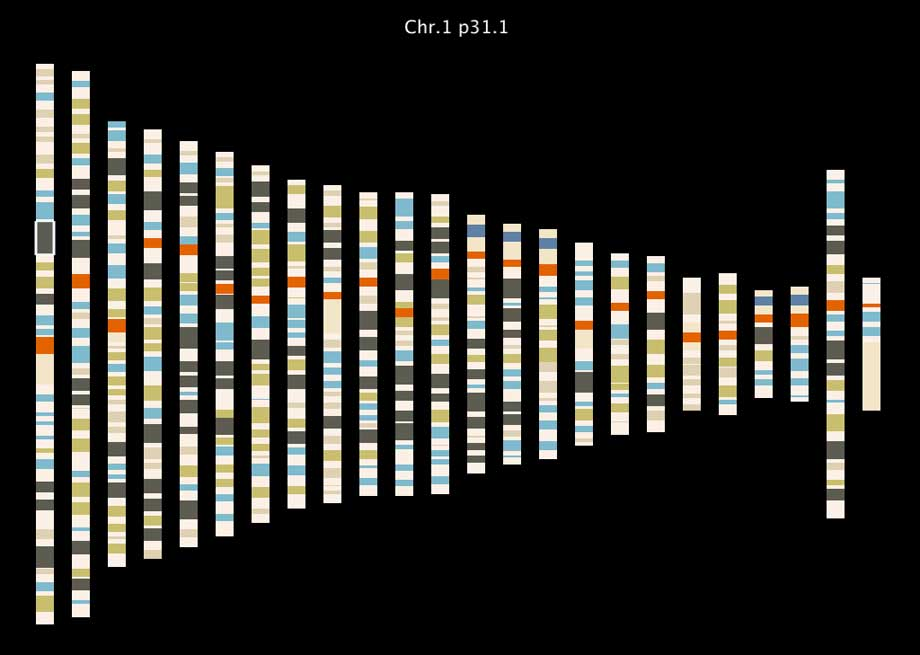

cytoband view

Abstract
"cytoband view" is a viewer for the Human chromosome cytoband (Human Genome, UCSC hg.19). When you point to a band, the band name (like, Chr.8q12.1) will be shown. Colors of bands change to make a good show.
Inside of Program
- It automatically downloads cytoBand.txt.gz from the UCSC Human annotation site and stores to a local machine cache(CytobandLoader.java).
- The data is read and is stored to objects (Cytoband.java).
- After that, the data is set to the appropriate position according to the bands (using base pairs) (CytobandView.java).
- To draw the data, it uses the Rect method for each band (CytobandView.java).
- It also uses HitRect for testing mouse hits to objects. When the mouse is on the objects, it writes messages to the band name and draw strokes to the band(CytobandView.java).
- For download, it uses casmi.net.HTTP
- For saving the data for cache, it uses casmi.parser.CSV
- For drawing bands, it uses casmi.element.Rect
- For detecting mouse hits, it uses casmi.hit.hitRect
- For writing messages, it uses casmi.element.Text and casmi.font.Font